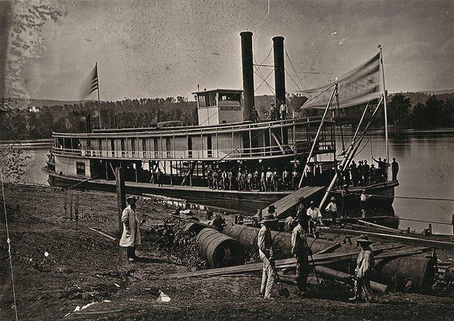

"The last fourteen miles of that march were made by you, my comrades, almost entirely on the double quick, reaching Savannah early in the morning. Who amoung you that were there, can or will, ever forget the scenes presented to view as we entered that town? The houses were all turned to hospitals and filled with wounded men brought from the battlefield eight miles distant. And you my comrades, standing in thoses muddy streets that whole long, terrible night in a continuous down pour of rain, without shelter of any kind. It was indeed difficult to keep even your powder dry. However, early the next morning, before the break of day, the regiment embarked on steamboats and proceeded up the river, arrived at Pittsburg landing at seven o'clock in the morning of the second day of the great battle that was then being fought here."
"As we stood on that morning on this spot, we knew that we were in the mist of a disrupted country, with the prospect of a long and exausting war before us."
-Excerp from John Obreiter's speech at the Dedication of the Shiloh Monument from Sgt. John Obreiter's regimental history